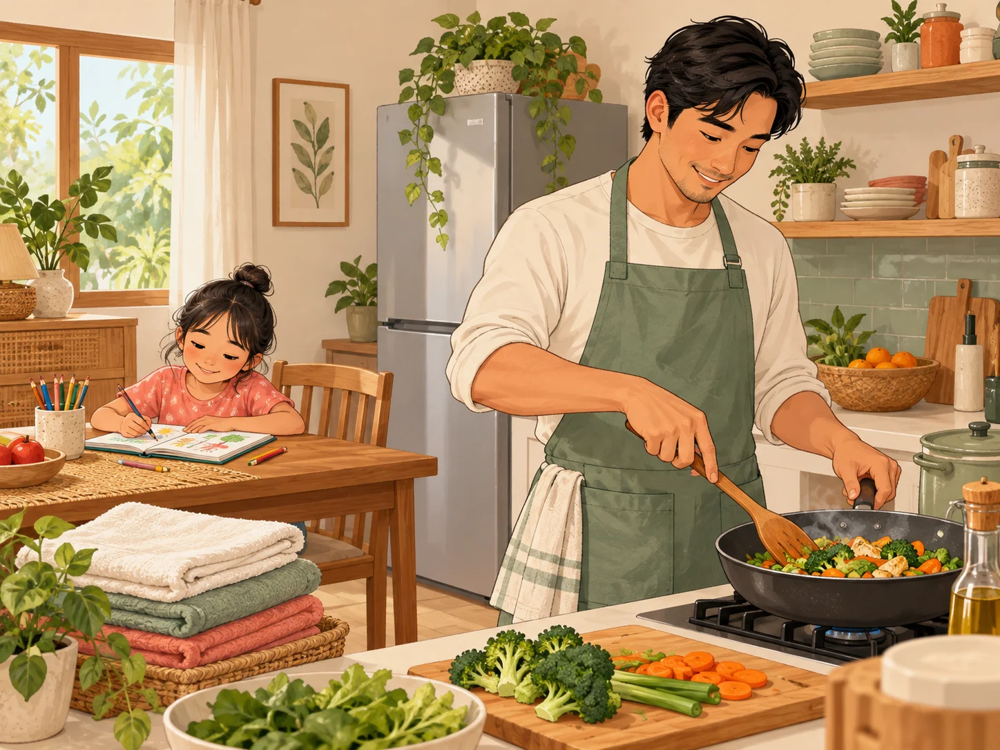
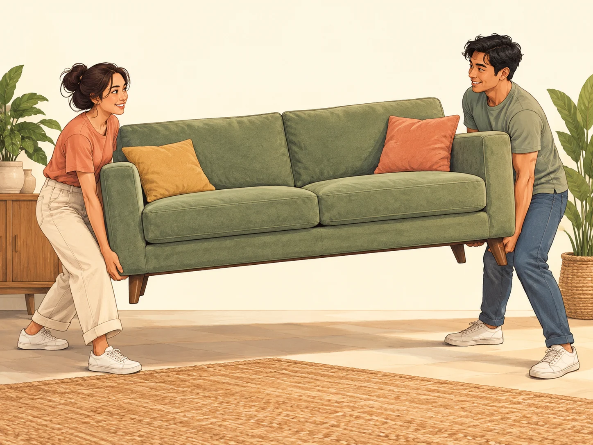
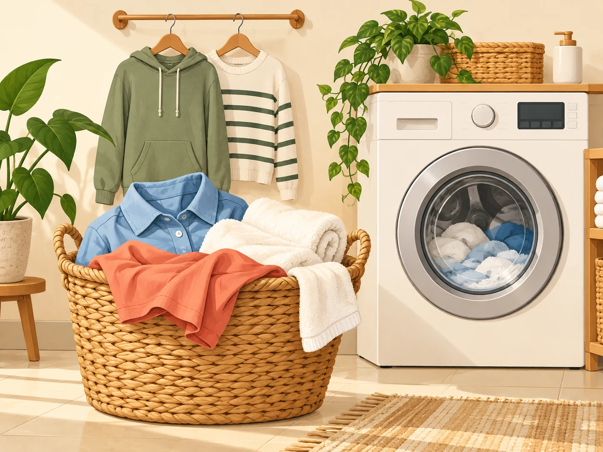
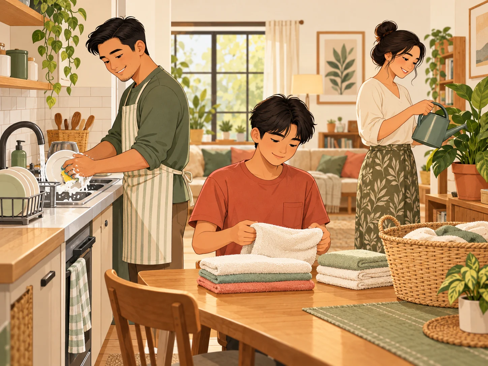
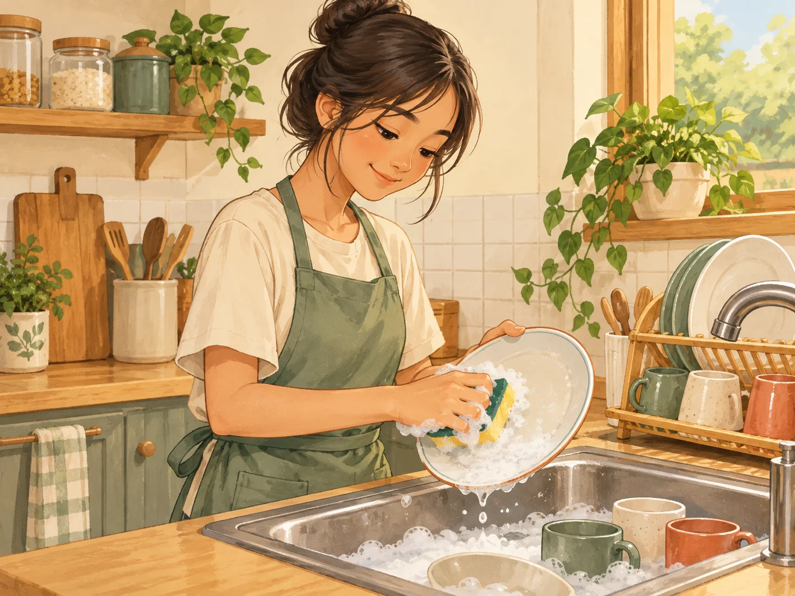

Happy
Family Day!
Lesson 8 — Looking back and Project
1Three stops
- 🧠
Brainstorm
All the chore words you remember
5 min - ✅
Looking back
Sounds · words · tenses
12 min - 🎤
Project
Present your Family Day
28 min
Brainstorm
Four groups · one minute
5 minutesHow many chore words can your group write?
cooking laundry washing-up groceries heavy lifting rubbish household chore breadwinner homemaker split housework
Looking back
Page 16
12 minutesWhich blend is in each word?
1. ice cream · brother · bread /kr/ · /br/ · /br/
2. Tracy · crashed · tree · broke /tr/ · /kr/ · /tr/ · /br/
3. crab · breakfast /kr/ · /br/

do the cooking
(vp) /duː ðə ˈkʊkɪŋ/ nấu ăn We take turns to do the cooking at home.
do the heavy lifting
(vp) /duː ðə ˌhevi ˈlɪftɪŋ/ làm công việc mang vác nặng My parents do the heavy lifting when we move furniture.
do the laundry
(vp) /duː ðə ˈlɔːndri/ giặt giũ We do the laundry at weekends.
clean the house
(vp) /kliːn ðə haʊs/ dọn dẹp nhà cửa We clean the house together every Sunday.
do the washing-up
(vp) /duː ðə ˌwɒʃɪŋ ˈʌp/ rửa bát đĩa I do the washing-up after dinner.Complete the text · page 16
1. My mum ______ in our family. does the cooking
2. My dad ______ because he is the strongest. does the heavy lifting
3. My sister does the ______ every Sunday. laundry
4. We take turns ______ at the weekend. cleaning the house
5. After dinner, I ______. do the washing-up
Correct the verb · 1–3
- 1. I ’m wanting a new bike. want — want is not used in the continuous
- 2. I look after my sister right now. ’m looking after
- 3. He ’s often looking tired. often looks
Correct the verb · 4–6
- 4. Listen! Mum cooks in the kitchen. ’s cooking
- 5. What do you read at the moment? are you reading
- 6. What are your family doing at weekends? does your family do
Project
Happy Family Day!
28 minutesThree groups, three Family Days
- 🇻🇳
Vietnamese Family Day
28 June — cooking contests, family sports, cultural gatherings
- 🌍
International Day of Families
15 May — UN theme, solidarity between generations
- 🍁
Family Day around the world
Canada and elsewhere — outdoor camping, communal dinners
How to present
Five minutes per group: present the day, then propose one activity for our class.
How your project is marked
| Criterion | Weight |
|---|---|
| Cultural research & relevance of the activity | 30% |
| Visual design & presentation quality | 25% |
| Delivery & pronunciation | 25% |
| Team collaboration & AI declaration | 20% |
10.A1.2 A group that used AI without handing in the declaration form loses that whole 20%. Because the hardest part of this project is verifying. AI happily invents holidays and customs that sound completely real. The group that can point to a source is the group worth marking.
While you watch the other groups
- 🔎
One fact
Note one fact you did not know.
- ❓
One question
Think of one question for the group.
- 👍
One compliment
One thing they did well — be specific, not “that was great”.
Unit 1 — done
What you can now do
✅ Talk about chores and family roles
✅ Pronounce /br/ /kr/ /tr/
✅ Use the present simple and present continuous correctly
✅ Write a paragraph about family routines
Homework
1. Revise all of Unit 1; finish the workbook.
2. Prepare for Unit 2 — Humans and the Environment, Lesson 1.